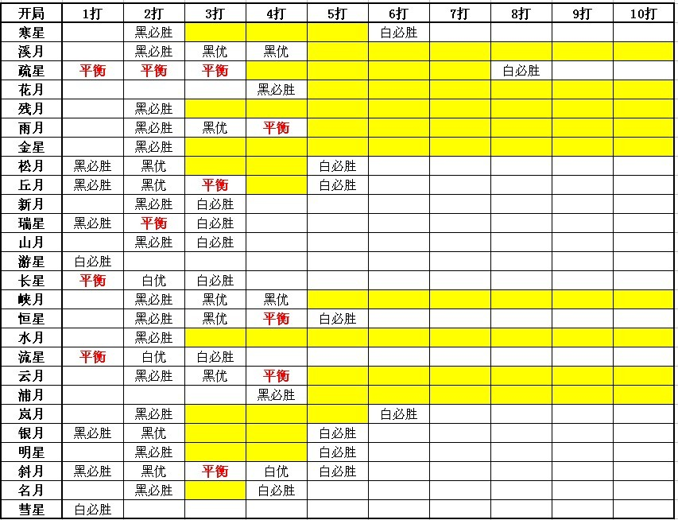

打点形势第一次分析/讨论
首页
五子棋交流
#1 打点形势第一次分析/讨论 作者：屏蔽 发表时间：2010-4-12 8:44:06
 山口规则打点分析.rar
山口规则打点分析.rar
见附件，我做成了Excel，和上次的打点指南不同，这个尽量在比较确定的情况下对局面的准确形势进行填写，所以还有很多都没有结论。其中，黄色代表不确定的部分，白色中“黑必胜”之前都是黑必胜，“白必胜”之后都是白必胜。表格是基于我现有的理解给出的，下面按局面叙述需要讨论的问题（黄色的格子都需要讨论），恳请大家帮助。
寒星局：
=======上图对应的爱五子棋谱代码如下，以便你拆解：========
h8h9h10j9
======================================================不知道三打开始的打点如何。
疏星局：
主要看弱防中黑棋最多能给出多少必胜、黑优或平衡打点，最强4对应的（至少是前三个）打点都可以认为是平衡的。
残月局：
=======上图对应的爱五子棋谱代码如下，以便你拆解：========
h8h9j9g7
======================================================残月四打白棋已经可以接受，上图中有几个必胜点？
金星局：
=======上图对应的爱五子棋谱代码如下，以便你拆解：========
h8h9j8g8f7a1g9b1j9
======================================================7位基本判断为平衡，5、9感觉依然不明确，此外，金星局可能的打点数似乎比想象的要多。
松月局/松月局/明星局：
主要考察其他弱4是否能给出3或4个打点。
水月局：
三打以上有很多白4的防守都没来得及考查。
斜月局：
=======上图对应的爱五子棋谱代码如下，以便你拆解：========
h8i9g7i10g8h10i8j8g11g10j10f9f10
======================================================一打的必胜是概念上的，上图为四打，需要研究下形势。13之前是否有更好的变化？
名月局：
判定名月三打是否有白必胜的可能？
［此帖子已被 屏蔽 在 2010-4-12 8:45:22 编辑过］
［ 无尽 于 2010-4-12 9:36:46 时奖励此帖[金币加 20 威望加1］
#2 Re:打点形势第一次分析/讨论 作者：小帮帮 发表时间：2010-4-12 13:09:59
个人拆解，名月3打至今未拆出白必胜的4，名月4打，名月存在白必胜的4
#3 Re:打点形势第一次分析/讨论 作者：失落刀 发表时间：2010-4-14 23:07:08

一楼的图帮忙贴出来，直观些。
［ 屏蔽 于 2010-4-15 7:26:03 时花20金币送鲜花一朵］
#4 Re:打点形势第一次分析/讨论 作者：sonix 发表时间：2010-4-15 19:11:06
建议统一优势描述标准，既然银月2打写的是黑优，新山残名2打写黑必胜有些不妥吧
#5 Re:打点形势第一次分析/讨论 作者：屏蔽 发表时间：2010-4-15 20:06:27
sonix说的是。这份表格从选拔赛之前开始制作，但恐怕我从接触山口规则到选拔赛之前对布局的理解尚不及这一个月以来的提升，看来还有太多东西需要完善。
#6 Re:打点形势第一次分析/讨论 作者：极地剑客 发表时间：2010-6-16 21:28:12
3楼很强大~~~~~~
#7 Re:打点形势第一次分析/讨论 作者：小帮帮 发表时间：2010-6-17 22:19:14
屏蔽老师斜月那个变化的5不是4打，必败了这个5.
=======上图对应的爱五子棋谱代码如下，以便你拆解：========
h8i9g7i10g8h10i8j8g11g10j10h11
======================================================
=======上图对应的爱五子棋谱代码如下，以便你拆解：========这个5是4打，找不到白杀的路径
其他的4打，都是必败的
h8i9g7i10i8
======================================================